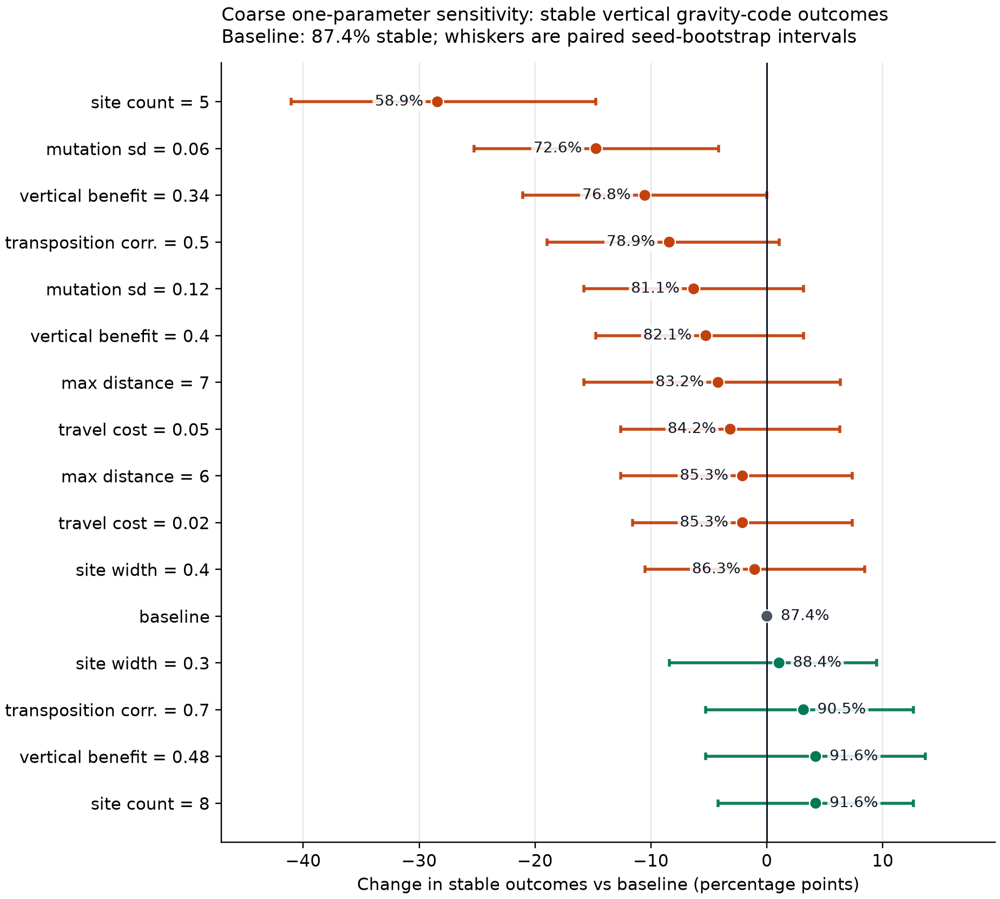
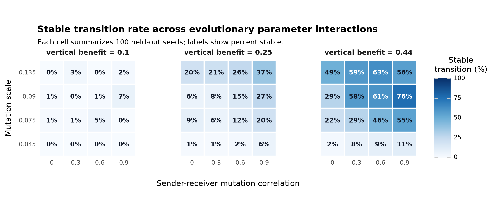
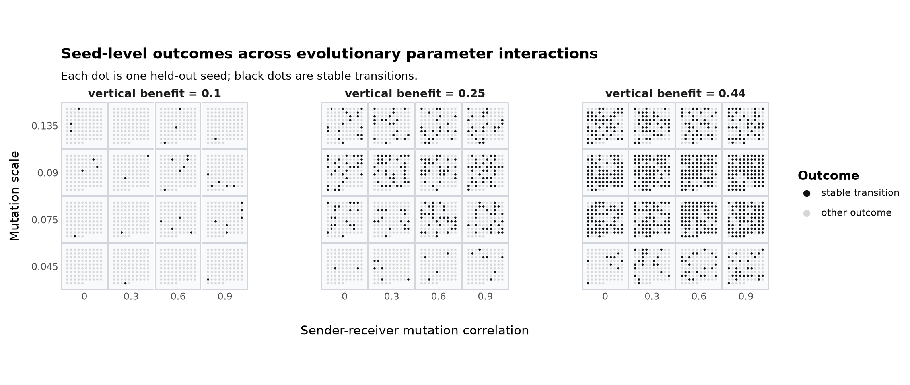

Honeybee waggle dances can recruit nestmates to resources away from the nest. One ecological question is when a costly spatial signal is worth maintaining, and a second evolutionary question is how a direct pointing signal could become a gravity-referenced vertical-comb code. Empirical and theoretical work suggests that dance value depends on resource density, patch size, reward, distance, and habitat (Sherman and Visscher 2002; Dornhaus and Chittka 2004; Dornhaus et al. 2006; Beekman and Lew 2008; Donaldson-Matasci and Dornhaus 2012; Schürch and Grüter 2014; I’Anson Price and Grüter 2015).
This report covers only the current v2 model and the tracked v2 result files. The model is intentionally small: it asks whether horizontal-start populations can evolve both a vertical comb and a sender-receiver gravity code under simple foraging, inheritance, and mutation rules.
Colonies are the reproducing entities. Workers are behavioral samples from heritable colony means. A colony has seven mean traits: directional-bias investment, receiver attention, sender transposition, receiver transposition, search limit, comb tilt, and comb orientation. Directional bias controls the concentration of dance signals; receiver attention controls whether a worker follows an available dance; sender and receiver transposition interpolate between direct pointing and a sun/gravity-referenced code.
Each foraging episode samples food sites with direction, distance, angular width, value, and capacity. Workers act sequentially. If dances are available, a worker may follow one; otherwise it searches in a random direction. A successful worker always adds a dance for the discovered site, whether the worker found it independently or by following another dance. Dance cost is therefore paid for every successful worker that produces a signal.
Comb geometry determines the available directional cues. Direct pointing projects the horizontal food direction onto the comb plane. Gravity-referenced communication uses the projection of gravity into the comb plane together with the episode sun azimuth. A horizontal comb has no gravity reference in the dance plane; the gravity cue strengthens as the comb becomes vertical. The reported v2 transition experiments use axial comb orientation, so orientations that differ by 180 degrees represent the same comb plane.
For a worker with sender transposition , the encoded dance angle is a weighted circular mean of direct and gravity-referenced angles:
The emitted signal is sampled from a von Mises distribution centered on , with concentration proportional to directional-bias investment, and then perturbed by production noise. A receiver with transposition applies the analogous weighted decoding rule and interpretation noise.
Episode payoff is food value minus search/travel cost, dance cost, and attention cost. A vertical comb can multiply net episode payoff:
where is comb tilt and is the vertical-comb benefit. This benefit does not rescue a colony whose foraging payoff has collapsed. Daughter colonies are sampled in proportion to payoff. All heritable traits mutate with the shared mutation scale; sender and receiver transposition mutations may be correlated by .
Unless stated otherwise, v2 runs use 60 colonies, 80 workers per colony, 120 generations, 50 foraging episodes per colony per generation, 12 foraging attempts per episode, maximum search distance 8, food value 1, baseline dance cost 0, directional cue cost 0.02, attention cost 0.01, dance-production noise 0.18, interpretation noise 0.12, within-colony worker variation 0.08, horizontal initial combs, axial orientation, and the linear vertical-comb modifier .
A seed is counted as a stable vertical gravity-code outcome when final mean comb tilt is at least 0.80 and both final mean sender and receiver transposition are at least 0.50. Gravity reached means both transposition traits crossed 0.50 at any generation. A seed is counted as collapsed if mean success falls to 0.02 or below.
The v2 Snellius pipeline ran the following sequence:
| Stage | Source files | Seed panel |
|---|---|---|
| Optuna search | results/food_transition_v2_optuna_trials.csv,
results/food_transition_v2_optuna_seed_metrics.csv |
seeds 100-109 |
| Candidate confirmation | results/food_transition_v2_confirmation_* |
seeds 110-149 |
| Held-out validation | results/food_transition_v2_validation_* |
seeds 200-299 |
| One-parameter sensitivity | results/food_transition_v2_oat_sensitivity_*,
results/food_transition_v2_sensitivity_refinement_* |
seeds 300-399 |
| Evolutionary interaction grid | results/food_transition_v2_evolutionary_interaction_* |
seeds 300-399 |
The Optuna search evaluated 512 trials over food-site count, angular width, capacity, vertical-comb benefit, maximum food distance, travel cost, mutation scale, and sender-receiver mutation correlation. Food value was fixed at 1.0. The objective prioritized stable seed count, then a bounded near-miss progress score, and penalized collapse. Of the 512 completed trials, 61 were stable in all ten optimization seeds and another 109 were stable in nine of ten seeds.
The top confirmation candidates were rerun on 100 held-out seeds. All five validation candidates produced frequent stable vertical gravity-code transitions and no collapse events.
| Candidate | Sites | Width | Cap. | Max dist. | Travel cost | Mut. sd | Stable | Success | ||||
|---|---|---|---|---|---|---|---|---|---|---|---|---|
| trial_257 | 8 | 0.270 | 9 | 0.600 | 6.5 | 0.055 | 0.090 | 1.0 | 99/100 | 0.563 | 0.856 | 0.832 |
| trial_471 | 8 | 0.240 | 8 | 0.580 | 6.5 | 0.055 | 0.090 | 1.0 | 95/100 | 0.516 | 0.848 | 0.822 |
| trial_425 | 8 | 0.340 | 9 | 0.600 | 8.0 | 0.055 | 0.090 | 0.8 | 93/100 | 0.618 | 0.852 | 0.805 |
| trial_243 | 8 | 0.280 | 9 | 0.540 | 7.0 | 0.055 | 0.090 | 1.0 | 88/100 | 0.572 | 0.841 | 0.823 |
| trial_139 | 8 | 0.290 | 9 | 0.540 | 8.0 | 0.055 | 0.110 | 1.0 | 86/100 | 0.547 | 0.834 | 0.805 |
Here
is final mean comb tilt and
is final mean of the lower sender or receiver transposition value. The
strongest held-out candidate, trial_257, reached stable
vertical gravity-code outcomes in 99 of 100 seeds. The candidates share
a narrow region of parameter space: eight food sites, moderate angular
widths, high vertical-comb benefit, non-negligible travel cost,
moderate-to-high mutation scale, and strong sender-receiver mutation
coupling.
The sensitivity panels use trial_257 as the baseline. On
the later 100-seed sensitivity panel, the baseline produced 91 stable
transitions, 98 gravity-reached seeds, 92 vertically retained seeds, and
no collapses. Mean final success was 0.561.

The refined sensitivity results identify two main cliffs: too few food sites and too low a mutation scale. Other one-parameter perturbations are less damaging within the tested ranges.
| Parameter | Baseline | Weakest tested value | Stable | Strongest tested value | Stable |
|---|---|---|---|---|---|
| Food-site count | 8 | 5 | 5/100 | 9 | 93/100 |
| Food-site width | 0.270 | 0.200 | 58/100 | 0.300 | 96/100 |
| Food-site capacity | 9 | 5 | 82/100 | 11 | 94/100 |
| Max food distance | 6.5 | 5.5 or 7.5 | 92/100 | 7.0 | 96/100 |
| Travel cost | 0.055 | 0.040 | 89/100 | 0.050, 0.055, or 0.060 | 91/100 |
| Vertical-comb benefit | 0.600 | 0.480 | 83/100 | 0.560 | 94/100 |
| Mutation scale | 0.090 | 0.050 | 47/100 | 0.080 | 94/100 |
| Sender-receiver correlation | 1.0 | 0.600 | 87/100 | 0.900 | 94/100 |
The food-site-count result is the sharpest ecological boundary. Reducing the baseline from eight sites to five almost eliminates the transition even though colonies still forage. Mutation scale is the sharpest evolutionary boundary: at 0.05, many seeds retain verticality or partial transposition but fail to coordinate both by generation 120. The baseline does not require perfect sender-receiver coupling, but high coupling remains favorable.
The interaction grid keeps the validated ecology fixed but varies vertical-comb benefit, mutation scale, and sender-receiver mutation correlation. It maps whether mutation parameters can compensate for weaker architectural benefit.

| Mean stable rate across cells | Best cell | Best stable count | |
|---|---|---|---|
| 0.10 | 1.3% | mutation 0.090, | 7/100 |
| 0.25 | 13.6% | mutation 0.135, | 37/100 |
| 0.44 | 39.6% | mutation 0.090, | 76/100 |

Low vertical-comb benefit is not rescued by sender-receiver coupling. At , stable outcomes are almost absent. At , transitions remain minority outcomes even at high mutation and high coupling. At , intermediate mutation and strong coupling produce the best cell, but the rate remains below the validated baseline because the grid does not include the baseline’s higher value.
In the current v2 model, horizontal-start colonies can reliably evolve a vertical comb and a gravity-referenced sender-receiver code. The strongest validated candidate is stable in 99 of 100 held-out seeds, and the same parameter region remains stable in 91 of 100 later sensitivity seeds.
The result is conditional, not universal. The transition depends on an ecology with enough recruitable food sites, a substantial vertical-comb benefit, and mutation parameters that let comb tilt and sender-receiver transposition move together. Too few food sites or too small a mutation scale returns the population to productive but flat direct pointing. Weak vertical-comb benefit is not compensated for by mutation coupling.
The main conclusion is therefore modest: the v2 model contains a reproducible transition corridor, but that corridor is parameter-dependent. The next scientific step is to make the vertical-comb benefit and food ecology less abstract, then test whether the same transition remains under more explicit biological constraints.
The working report is report/report.md and is rendered
with:
python -u experiments/render_report_html.pyThe v2 figures in this report were regenerated from tracked CSVs with:
python -u experiments/plot_oat_sensitivity_effects.py \
--points results/food_transition_v2_oat_sensitivity_points.csv \
--events results/food_transition_v2_oat_sensitivity_events.csv \
--output report/figures/oat_sensitivity_stable_delta
python -u experiments/plot_evolutionary_interaction_heatmap.py \
--group-summary results/food_transition_v2_evolutionary_interaction_group_summary.csv \
--output report/figures/evolutionary_interaction_stable_heatmap
python -u experiments/plot_evolutionary_interaction_seed_outcomes.py \
--events results/food_transition_v2_evolutionary_interaction_events.csv \
--output report/figures/evolutionary_interaction_seed_outcomes_binary